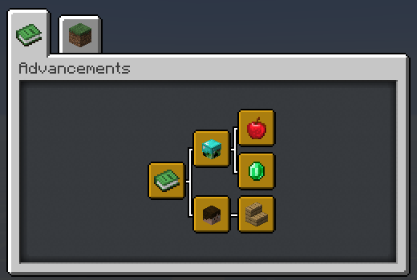
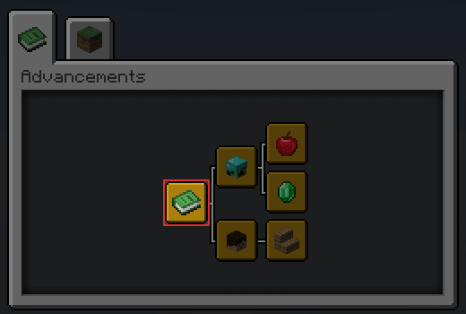
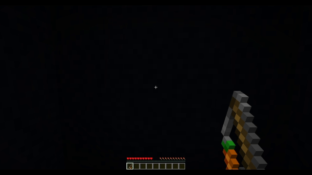

เกี่ยวกับ
Minecraft Datapacks TH คือคอมมูนิตี้ไมน์คราฟต์เซิร์ฟเวอร์ที่เดินหน้าเกี่ยวกับดาต้าแพ็ค ซึ่งหมายถึงเราต้องการวิธีการตรวจสอบความเข้ากันได้ระหว่างดาต้าแพ็คจำนวนมากเพื่อสร้างการใช้ระบบดาต้าแพ็คที่เสถียรและเป็นมิตรมีประสิทธิภาพกับผู้ใช้
เราทำมันยังไง
เพื่อให้สิ่งนี้สำเร็จได้เราใช้วิธี "ระเบียบการเขียนโปรแกรม" เราได้ขอให้ผู้เขียนดาต้าแพ็ครายอื่นๆปฎิบัติตามเพื่อปรับปรุงความเข้ากันได้ระหว่างดาต้าแพ็ค และในการทำเช่นนั้นเราต้องสร้างวิธีการเขียนที่ควรจะเป็นเพื่อให้สามารถเข้าถึงแบบแผนเหล่านี้ได้อย่างรวดเร็ว และนั่นคือวัตถุประสงค์ของเว็บไซต์นี้
ส่วนช่วยเหลือ
หากคุณต้องการมีส่วนร่วมในโครงการนี้คุณสามารถทำได้ผ่าน Github repository นี้
ณ ตอนนี้มีการสนับสนุน 3 ประเภท ส่วนช่วยเหลือไวยากรณ์, ส่วนช่วยเหลือเคล็ดลับ และ ส่วนช่วยเหลือแบบแผน
- ส่วนช่วยเหลือไวยากรณ์ คือการเรียกขอแก้ไขไวยากรณ์อย่างง่ายๆใครๆ ก็สามารถทำสิ่งนี้ได้ถ้าหากพวกเขาสังเกตเห็นความผิดพลาดทางไวยากรณ์
- ส่วนช่วยเหลือเคล็ดลับ ในส่วนการช่วยเหลือ "เคล็ดลับ" ในการเก็บหัวข้อรวบร่วมข้อมูลจะคล้ายๆกับ ส่วนช่วยเหลือไวยากรณ์ คุณแค่ต้องยื่นเรียกคำขอและรอการอนุมัติ
- ส่วนช่วยเหลือแบบแผน คือส่วนช่วยเหลือของ "แบบแผน" ในการเก็บหัวข้อรวบร่วมข้อมูลเพื่อช่วยเหลือส่วนนี้โปรดอ่านหัวข้อถัดไป
ส่วนช่วยเหลือแบบแผน
หากต้องการช่วยเหลือในส่วนนี้คุณต้องอธิบายปัญหาด้วยป้ายกำกับว่า Convention Suggestion ในรูปแบบดังนี้
- อธิบายแบบแผน
- อธิบายเกี่ยวกับวิธีการใช้งาน
- อธิบายว่าทำไมจึงควรเพิ่ม
หลังจากนั้นเราจะพูดคุยถกเถียงและโหวตว่าจะเพิ่มหรือไม่ หากการโหวตผ่านคุณสามารถเรียกคำขอและรอการอนุมัติ
แบบแผนทางการ
แบบแผนทางการที่ทุกคน ควร ปฎิบัติตามเพื่อความเข้ากันได้ของดาต้าแพ็ค
แอดวานซ์เม้นท์ดาต้าแพ็ค (*)
เกี่ยวกับ
แบบแผนนี้มีวัตถุประสงค์เพื่อแสดงข้อความการติดตั้งดาต้าแพ็คให้ดูได้ง่ายและไม่ยุ่งยากกับผู้ใช้โดยใส่มันไว้ที่แท็บแอดวานซ์เม้นท์เดียว
ชมตัวอย่าง
นี่คือตัวอย่างคร่าวๆของแบบแผนนี้

การใช้งาน
แบบแผนนี้แบ่งออกเป็น 3 ส่วน: Root, Namespace และ Datapack
1. Root Advancement
นี่คือจุดเริ่มต้น Advancement ของทุกๆดาต้าแพ็คที่จะแยกสายออกมาจากข้อนี้

ไฟล์ Advancement นี้จะ ต้อง อยู่ที่ไฟล์ /data/global/advancements/root.json
{
"display": {
"title": "Installed Datapacks",
"description": "",
"icon": {
"item": "minecraft:knowledge_book"
},
"background": "minecraft:textures/block/gray_concrete.png",
"show_toast": false,
"announce_to_chat": false
},
"criteria": {
"trigger": {
"trigger": "minecraft:tick"
}
}
}
2. Namespace Advancement
นี่คือ Advancement หัวของผู้สร้าง (player_head) แต่ละดาต้าแพ็ค
ซึ่งทุกๆของคุณดาต้าแพ็คจะเหมือนกันหมด ซึ่งมัน ต้อง อยู่ที่ไฟล์ /data/global/advancement/<namespace>.json.
{
"display": {
"title": "<Your name>",
"description": "",
"icon": {
"item": "minecraft:player_head",
"nbt": "{SkullOwner: '<your_minecraft_name>'}"
},
"show_toast": false,
"announce_to_chat": false
},
"parent": "global:root",
"criteria": {
"trigger": {
"trigger": "minecraft:tick"
}
}
}
หมายเหตุ
ถ้าคุณทำเขียนดาต้าแพ็คแล้วมีคนช่วยหลายคนคุณสามารถเลือกใช้ได้ดังนี้ :
- แสดงผลแบบ "ชื่อของคุณเอง" และให้เครดิตคนในทีมด้วยวิธีอื่น เช่น เพิ่มที่คำอธิบาย, ตัวเลือกหรือการตั้งค่าในส่วนของเมนูเกี่ยวกับ เป็นต้น
- แสดงผลแบบ "ชื่อทีม" ที่คุณเลือกกันในทีม
- แสดงผลแบบ "ดาต้าแพ็คชุดเดียว" แทน.
3. Datapack Advancement
นี่คือ Advancement สำหรับแสดงผลการติดตั้งและข้อมูลดาต้าแพ็คของคุณ มันควรอยู่เดี่ยวๆจากดาต้าแพ็คอื่นๆ

คุณสามารถสร้างมันที่ไหนก็ได้ แต่ไม่ใช่ที่ โฟลเดอร์ /data/global/advancements/folder ซึ่งผมแนะนำว่า /data/namespace/advancement/datapack_name/<datapack_name>.json
{
"display": {
"title": "<datapack name>",
"description": "<datapack description>",
"icon": {
"item": "<item>"
},
"announce_to_chat": false,
"show_toast": false
},
"parent": "global:<namespace>",
"criteria": {
"trigger": {
"trigger": "minecraft:tick"
}
}
}
หมายเหตุ
ทุกอย่างที่อยู่ใน <...> ควรเปลี่ยนเป็นข้อมูลตามที่เขียนระบุไว้
ผลลัพธ์
แท็บ Advancement ของคุณในตอนนี้มันควรจะเป็นแบบนี้ดังภาพ:

(Image by @Hashs#9531)
พิเศษ: ดาต้าแพ็คชุดเดียว
รูปแบบของตัวเลือกนี้คุณสามารถใช้ได้หากคุณต้องการแสดงเส้นสายแอดวานซ์เม้นท์ของดาต้าแพ็คแบบชุดเดียว โดยไม่มี หัวของผู้สร้าง/เขียน
การใช้งานนี้คุณข้ามขั้นตอน #2: Namespace Advancement ไปได้และให้มั่นใจว่าในขั้นตอน #3: Datapack Advancement คุณสร้างไฟล์ไว้ที่ไดเรกเทอรี่ /data/global/advancements/standalone/
โปรดทราบว่าหากคุณมีแผนจะทำดาต้าแพ็คเพิ่มขึ้น คุณควรใช้รูปแบบปกติ
ถอนการติดตั้งดาต้าแพ็ค (*)
เกี่ยวกับ
แบบแผนนี้ทำให้คุณมั่นใจว่าคุณมีวิธีการถอนการตั้งตั้ง ข้อมูลหรือเนื้อหา ส่วนใหญ่ ที่เกิดจากดาต้าแพ็คของคุณ ที่ใช้คำว่า "ส่วนใหญ่" เนื่องมาจากตัวเกม ไม่มีเครื่องมือที่จำเป็นในการถอนการติดตั้งหรือลบข้อมูลทั้งหมดของดาต้าแพ็ค
การใช้งาน
ไม่มีกฎหรือการบังคับใดๆว่าคุณควรใช้วิธีใดถอนการติ้งตั้งขึ้นอยู่กับคุณว่าจะใช้วิธีใด แต่ข้อต่อไปเป็นหนึ่งในหลายๆวิธีที่ใช้กัน
ฟังก์ชั่นถอนการตั้งตั้ง
คุณสามารถสร้าง "ฟังก์ชั่นถอนการติ้งตั้ง" เมื่อมีการใช้งาน มันจะลบข้อมูลส่วนใหญ่ที่มีมาจากดาต้าแพ็คของคุณ คุณสามารถบอกผู้ใช้เกี่ยวกับฟังก์ชั่นนี้ในหน้าโพสต์เผยแพร่ดาต้าแพ็คของคุณหรือที่ใดก็ได้ที่คุณต้องการ
Common Trait แบบแผน (**)
คืออะไร
แบบแผนนี้มีวัตถุประสงค์เพื่อนำระบบ Ore Dictionary จาก Forge ไปยังไอเทมกำหนดเองของดาต้าแพ็ค ทำได้โดยใช้คุณสมบัติ NBT ที่กำหนดเองของไอเทม เราสามารถใส่ NBT ภายในไอเทมใดก็ได้ที่เราสามารถใช้คำสั่งอื่นๆเพื่อเช็คหรือดูข้อมูลภายในของมันได้
โดยสิ่งนี้เราสามารถสร้างระบบการค้นหาแบบรวมที่ดาต้าแพ็คทุกอันสามารถใช้เพื่อหาไอเทมเฉพาะที่ต้องการ ซึ่งคุณสามารถใช้ syntax ที่ใส่ไว้ใน Common Trait Convention เพื่อสร้างฟังก์ชั่นเพื่อหาไอเทมที่คุณต้องการได้
การใช้งาน
มันยากที่จะจินตนาการว่าแบบแผนนี้จะใช้ประโยชน์ในโลกจริงได้อย่างไร เราจึงรวบรวมการใช้งานที่มีประโยชน์ ซึ่งจะไม่สามารถทำได้หากไม่ทำตามแบบแผนที่ว่าเหล่านี้
- สมมติว่าเราเพิ่ม
custom furnaceโดยคุณอยากจะหลอมแร่ทองแดงให้เป็นทองแดงแท่ง ด้วยแบบแผนนี้ คุณสามารถตรวจสอบแร่ทองแดง ใดๆก็ได้ ก็ได้จากดาต้าแพ็คอื่นๆเพื่อหลอมมัน (สรุปก็คือ หากดาต้าแพ็คของคุณมีเตาเผาที่สร้างขึ้นมาเองหรือกำหนดเอง เมื่อทำตามแบบแผนนี้มันจะทำให้เตาเผาของคุณหลอมแร่ทองแดงจากทั่วทุกสารทิศที่เพิ่มเข้ามาจากดาต้าแพ็คของคนอื่นหรืออาจจะรวมไปถึงแร่ของม็อดด้วย) - สมมติว่าดาต้าแพ็คของคุณเพิ่ม
fridge ตู้เย็นที่รับเฉพาะไอเทมอาหารด้วยแบบแผนนี้คุณสามารถตรวจหาไอเทมอาหาร ใดๆก็ได้ แม้แต่ไอเทมอาหารที่ถูกสร้างขึ้นมาเองจากดาต้าแพ็คอื่นๆได้ - สมมติว่าดาต้าแพ็คของคุณได้เพิ่ม
custom anvilที่ทำให้คุณซ่อมของได้โดยตรงจากไอเทมที่ทดแทนกันได้แทนที่จะเป็นแร่เหล็ก เพชร ทอง เป็นต้น ด้วยแบบแผนนี้ คุณสามารถตรวจจับไอเทมวัสดุทดแทน ใดๆก็ได้ จากดาต้าแพ็คอื่นๆแม้วัสดุของไอเทมจะไม่ตรงกัน (สรุปก็คือ ถ้าคุณจะซ่อมดาบเหล็กสักเล่ม คุณต้องใช้แร่เหล็ก แต่เมื่อมีแบบแผนนี้custom anvilของคุณก็สามารถใช้แร่ที่ทดแทนเหล็กได้ อลูมิเนียม ไทเทเนี่ยม และอื่นๆถ้าในเกมมี)
Traits
Traits คือ อัตลักษณ์และคุณสมบัติที่ไอเทมสามารถมีได้ โดยการระบุคุณสมบัติพวกนี้ลงใน NBT ของไอเทม ดาต้าแพ็คอื่นๆจะสามารถอ้างอิงไอเทมนั้นๆผ่าน Traits แทนการใช้ ID ได้โดยตรง
Trait เป็น อาร์เรย์ของสตริงและมี trait แบบนี้ใน nbt (notice traits: [...]?)
/give @s diamond{ctc: {traits: {"some": 1b, "trait": 1b, "here": 1b}, id: "example", from: "convention:wiki"}}
Syntax
Syntax ของ Common Trait Convention จะเก็บอยู่ข้างใน ctc ของ nbt ไอเทม ภายในctc จะบรรจุข้อมูล: id, from และ traits nbts.ไว้
id: ไอดีจะอยู่ภายในของไอเทมของคุณซึ่งมันไม่ควรใช้ภายนอกดาต้าแพ็คของคุณ และต้องไม่ซ้ำกันถายในดาต้าแพ็คที่คุณเขียนfrom: เป็นชื่อของคุณหรือ namespace ที่ระบุว่าไอเทมนั้นมาจากดาต้าแพ็คอะไรtraits: เป็นอาร์เรย์ของ traits ที่คุณสามารถใช้เพื่ออ้างอิงไอเทมจากดาต้าแพ็คภายนอกได้
เราจะสมมติว่า syntax ดังต่อไปนี้เป็นโครงสร้าง NBT ของ คำสั่ง /give
{
ctc: {
id: "my_copper_ore",
from: "convention:wiki",
traits: {"metal/copper": 1b, "block": 1b, "ore": 1b}
}
}
เกมไม่มีการ
เซ็ตประเภทข้อมูล ดังนั้นเราเลยใช้การผสมแท็กแบบซ้ำ ซึ่งหมายความว่าทุก trait ต้องมีค่า1bหรือtrueเพื่อให้สอดคล้องกัน.
ลองดูที่ traits nbt
metal/copper, trait traits นี้บอกเราว่าไอเทมนี้เป็นทองแดงblock, trait นี้บอกเราว่าไอเทมนี้เป็นบล็อกที่สามารถวางได้ore, trait นี้บอกเราว่าไอเทมนี้เป็นแร่
เครื่องหมายสแลช
ในตัวอย่างจะเห็นว่ามีการใช้ / ใน metal/copper, ซึ่งจะใช้ก็ต่อเมื่อ trait (ลักษณะ)ของวัตถุไม่สามารถระบุได้เพียง 1 อย่าง เช่น ลักษณะพิเศษของ orange (ส้ม) หมายถึงอะไรได้บ้างมันเป็น สี ส้มหรือ ส้ม ที่เป็นผลไม้
ซึ่งเราจะใช้ เครื่องหมายสแลช เพื่อแยกประเภทเหล่านี้ให้ออก color/orange และ fruit/orange
การนำไปใช้
ในการตรวจจับหรือเช็คคุณสมบัติบางอย่างคุณเพียงแค่ตรวจสอบ traits nbt ของไอเทม
ตรวจจับว่าผู้เล่นถืออาวุธหรือไม่
execute as @a if entity @s SelectedItem.tag.ctc.traits."tool/weapon" run ...
คำสั่งนี้เช็คผู้เล่นว่ามีการถือไอเทมที่มีข้อมูล trait `tool/weapon`
---
ตรวจจับว่าภายในบล็อคเก็บของมีแร่ทองแดง
execute if block ~ ~ ~ Items[].tag.ctc.traits{"metal/copper": 1b, "ore": 1b} run ...
คำสั่งนี้เช็คกล่องบางอย่างว่าเก็บไอเทมที่มีข้อมูล traits `metal/copper` and `ore` อยู่ภายใน
---
ตรวจจับว่าภายในบล็อคเก็บของมีไอเทมที่วางได้
execute if block ~ ~ ~ Items[].tag.ctc.traits."block" run ...
คำสั่งนี้เช็คไอเทมบางอย่างว่ามีการเก็บข้อมูล traits block ซึ่งแสดงว่าบล็อคดังกล่าวนั้นวางได้
แม้ว่าเครื่องหมาย "" รอบๆ trait นั้นไม่จำเป็นในบางกรณี, แต่ฉันใส่มันไว้เพื่อความสอดคล้องที่ครอบคลุม.
trait พื้นฐาน
นี่คือ trait ของไอเทมที่คุณสามารถใช้ได้ แต่มันไม่ได้หมายความว่าคุณไม่สามารถสร้าง trait หรืออัตลักษณ์ใหม่สำหรับการใช้งานของคุณเอง แต่ถ้าคุณสมบัติของไอเทมที่เราระบุในตารางเหล่านี้เหมาะสมกับความต้องการของคุณ คุณก็ใช้มันแทนได้เลย
ลิสต์ถูกแบ่งออกเป็นหลายกลุ่มและคุณ ไม่ควร ใช้ traits จากกลุ่มเดียวกันสองครั้ง
กลุ่มของประเภทวัตถุ
trait แสดงเกี่ยวกับไอเทมที่ถืออยู่
| Trait | คำอธิบาย |
|---|---|
| gas | สารที่เป็นก๊าช |
| liquid | ของเหลว |
| block | ไอเทมที่วางได้ |
| item | ไอเทมปกติในไมน์คราฟต์ |
กลุ่มของประเภทพิเศษ
นี่คือ traits ทั่วไปของไมน์คราฟต์ม็อด ซึ่งจะช่วยให้ดาต้าแพ็คของคุณรวบรวมไอเทมที่ใช้กับดาต้าแพ็คของคุณทั้งหมดได้ด้วยแบบแผนนี้
กลุ่มนี้เป็นข้อยกเว้นของกฎข้างต้นคุณสามารถใช้ traits หลายอย่างจากกลุ่มนี้ได้มากเท่าที่คุณต้องการ
| Trait | คำอธิบาย |
|---|---|
| ore | บล็อกแร่ที่สามารถหาเจอได้จากถ้ำ |
| seed | ไอเทมที่ใช้ปลูกโตเป็นฟืชได้ |
| flower | ไอเทมดอกไม้ |
| grass | บล็อกที่สามารถแพร่กระจายจากบล็อกนึงไปยังอีกบล็อกนึงได้ |
| sapling | บล็อกที่โตเป็นต้นไม้ได้ |
| vegetable | ไอเทมอาหารจาก seed |
| log | ไอเทมที่ดรอปจากต้นไม้ |
| planks | ไอเทมที่ได้จากการแปรรูปไม้ log |
กลุ่มบีบอัด
traits นี้แสดงถึงไอเทมที่สามารถคราฟรวมกันให้บีบอัดอยู่ใน 1 ไอเทมได้ และ คราฟกลับออกมาแยกส่วนได้
ตัวอย่างเช่น:
redstone dust->redstone blockice->packed iceiron block->iron ingot
| Trait | คำอธิบาย |
|---|---|
| packed | รูปแบบอัดแน่นที่สุดของไอเทม, ซึ่งปกติจะอยู่ในรูปของบล็อก |
| ingot | รูปแบบปกติของไอเทม, ซึ่งปกติจะอยู่ในรูปของแท่งแร่ |
| nugget | รูปแบบไอเทมที่เล็กสุด, ซึ่งปกติจะอยู่ในรูปของนักเก็ต |
กลุ่มที่กินได้
traits นี้แสดงถึงไอเทมที่ผู้เล่นสามารถกินได้ (รวมไปถึงเครื่องดื่ม)
| Trait | คำอธิบาย |
|---|---|
| food | ไอเทมที่กินได้ทุกประเภท |
กลุ่มชุดเกราะ
traits นี้แสดงถึงไอเทมที่ผู้เล่นหรือเอ็นทิตี้อื่นๆสามารถสวมใส่ได้
| Trait | คำอธิบาย |
|---|---|
| armor | ไอเทมที่สวมใส่ได้ทุกประเภท |
กลุ่มแยกย่อยของเครื่องมือ
นี้ trait ใช้ เครื่องหมายสแลช!
traits นี้แสดงถึงไอเทม ที่สามารถใช้กับโลกได้
| Trait | คำอธิบาย |
|---|---|
| tool/mining | ไอเทมนี้สามารถใช้ขุดบล็อกหรือบล็อกอื่นๆที่เกี่ยวข้อง |
| tool/chopping | ไอเทมนี้สามารถใช้ตัดไม้และวัสดุไม้ |
| tool/tilling | ไอเทมนี้สามารถใช้ไถพรวนดิน |
| tool/watering | ไอเทมนี้สามารถใช้รดน้ำได้ |
| tool/weapon | ไอเทมนี้สามารถใช้สู้กับมอนสเตอร์แลพผู้เล่นอื่น |
กลุ่มย่อยของมณี
นี้ trait ใช้ เครื่องหมายสแลช!
traits นี้แสดงถึงไอเทมที่มีโครงสร้างเป็นผลึก
| Trait | คำอธิบาย |
|---|---|
| gem/diamond | อัญมณี เพชร |
| gem/ruby | อัญมณี ทับทิม |
| gem/emerald | อัญมณี มรกต |
| gem/sapphire | อัญมณี แซฟไฟร์ (ไพลิน) |
| gem/prismarine | พริสมารีน |
| gem/lapis | อัญมณี ลาพิส ลาซูลี |
| gem/obsidian | วัสดุ ออปซิเดี้ยน ใดๆ |
| gem/quartz | วัสดุ ควอตซ์ ใดๆ |
| gem/opal | อัญมณี โอปอล |
กลุ่มย่อยของโลหะ
นี้ trait ใช้ เครื่องหมายสแลช!
traits นี้แสดงถึงไอเทม ที่มักถูกเพิ่มโดยม็อด
| Trait | คำอธิบาย |
|---|---|
| metal/iron | ไอเทมที่ทำจากเหล็ก |
| metal/gold | ไอเทมที่ทำจากทอง |
| metal/copper | ไอเทมที่ทำจากทองแดง |
| metal/aluminium | ไอเทมที่ทำจากอลูมิเนียม |
| metal/tin | ไอเทมที่ทำจากดีบุก |
| metal/silver | ไอเทมที่ทำจากเงิน |
| metal/lead | ไอเทมที่ทำจากตะกัว |
| metal/nickle | ไอเทมที่ทำจากนิคเกิล |
| metal/platinum | ไอเทมที่ทำจากทองคำขาว |
อ้างอิง
Custom Model ID ไอดีโมเดลกำหนดเอง (***)
คืออะไร
ข้อนี้มีวัตถุประสงค์เพื่อลดการตีกันภายในระบบ custom model data ให้มากที่สุดโดยกำหนดรหัสเฉพาะสำหรับผู้สร้างดาต้าแพ็คทุกคนที่ใช้ Resource packs
1. ลงทะเบียนไอดีของคุณ
"id" คือเลขจำนวนเต็ม (Integer) ระหว่าง 1-999 ซึ่งเราจะใช้ namespaced custom model data เฉพาะเจาะจง เพื่อป้องกันการตีกันของ Resource packs resourcepacks.
คุณสามารถลงทะเบียนไอดีของคุณได้ที่นี่ https://mc-datapacks.web.app.
2. ใส่เลขด้านหน้าเลขโมเดลของคุณด้วยไอดีของคุณ
คุณต้องใส่เลขไอดีของคุณไว้ด้านหน้าเลขโมเดลของคุณในรูปแบบดังกล่าว ซึ่ง XXX เป็น ไอดีของคุณ และ 0000 เป็น custom model data เลขอะไรก็ได้ สูงสุดเต็มที่ 4 หลัก
| id | cmd |
|---|---|
| XXX | 0000 |
และนี่คือตัวอย่าง:
2.1. id = 42
{
"overrides": [
{"predicate": {"custom_model_data": 420001}, "model": "path/to/model/1"},
{"predicate": {"custom_model_data": 420020}, "model": "path/to/model/2"},
{"predicate": {"custom_model_data": 420300}, "model": "path/to/model/3"}
]
}
2.2. id = 808
{
"overrides": [
{"predicate": {"custom_model_data": 8081001}, "model": "path/to/model/1"},
{"predicate": {"custom_model_data": 8082002}, "model": "path/to/model/2"},
{"predicate": {"custom_model_data": 8083003}, "model": "path/to/model/3"}
]
}
2.3. id = 1
{
"overrides": [
{"predicate": {"custom_model_data": 10001}, "model": "path/to/model/1"},
{"predicate": {"custom_model_data": 10010}, "model": "path/to/model/2"},
{"predicate": {"custom_model_data": 10011}, "model": "path/to/model/3"}
]
}
หมายเหตุ
แบบแผนนี้ไม่ได้บังคับใช้ ข้อจำกัดใดๆจากเลขที่มีจำนวน 8 หลักขึ้นไป นักสร้างดาต้าแพ็ค สามารถใช้อันนี้เพื่อเพิ่มช่องจำนวนโมเดลเพิ่มเติมได้หากต้องการ (จำนวนหน่วยจะนับจากขวาไปซ่ายแน่นอน)
Global Ignoring Tag (***)
เกี่ยวกับ
แบบแผนนี้เป็นวิธีการสำหรับดาต้าแพ็คในการสื่อสารกับดาต้าแพ็คอื่นๆ โดยระบุ Tag entity ที่ดาต้าแพ็คอื่นๆสามารถใช้หากันได้ ข้อนี้จะใช้งานหนักที่สุดเพื่อป้องกันเหตุไม่คาดคิดของดาต้าแพ็คอื่นๆจากการ /kill หรือ ลบ entity ที่ summon เพื่อใช้งานพิเศษบางอย่าง เพราะว่าบางกรณีดาต้าแพ็คของคนๆนึงมีจังหวะที่ไม่ต้องการให้เกิดการยุ้งกับเอ็นทิตี้ดังกล่าว จึงต้องใช้แท็กนี้กันเอาไว้ เช่นในกรณีที่ ดาต้าแพ็คนึงสั่งซัมม่อน Armor stand ด้วย แท็กอะไรสักอย่าง เพื่อตรวจเช็คว่าบล็อคนั้นคือบล็อคอะไร แต่แล้วจู่ๆดาต้าแพ็คของอีกคนดันทำงาน /kill พอดีโดย สิ่งที่จะเกิดขึ้นคือ มันยังไม่ทันตรวจบล็อคดังกล่าวก็โดนดาต้าแพ็คของอีกคน /kill ไปสะก่อน บัคจึงบังเกิดขึ้นนั่นเอง
ในตอนนี้มีแท็ก ยกเว้น 4 แท็ก ดังนี้: global.ignore, global.ignore.pos, global.ignore.gui, global.ignore.kill
1. global.ignore.kill
เอ็นทิตี้ใดๆทีมีเจ้าแท็กนี้อยู่ จะต้องไม่ ถูก ฆ่า โดยดาต้าแพ็คอื่นๆ แต่ไม่ได้จำกัดใช้แค่ /kill นะ
execute as @e[type=creeper, tag=!global.ignore.kill] run kill @s
execute as @e[type=creeper, tag=!global.ignore, tag=!global.ignore.kill] run kill @s
kill @e[type=creeper, tag=!global.ignore, tag=!global.ignore.kill]
สามารถใช้คู่กับ tag=!global.ignore ได้
2. global.ignore.gui
เอ็นทิตี้ใดๆที่มีแท็กนี้ จะต้องไม่ แสดงผลเอฟเฟกต์ใดๆที่รอบๆเอ็นทิตี้นี้เลย แต่ไม่ได้จำกัดใช้แค่ /title, /particle, /playsound นะ
execute as @a[tag=!global.ignore.gui] at @s run title @s actionbar [{"text": "Hello, World!", "color": "green"}]
tellraw @a[tag=!global.ignore,tag=!global.ignore.gui] {"text":"Hello, World!","color":"green"}
execute as @a[tag=!global.ignore,tag=!global.ignore.gui] at @s run particle end_rod ~ ~ ~ 0 0 0 .01 0 normal
execute as @a[tag=!global.ignore,tag=!global.ignore.gui] at @s run playsound block.note_block.pling master @s ~ ~ ~ 2.5 1 1
สามารถใช้คู่กับ tag=!global.ignore ได้
3. global.ignore.pos
เอ็นทิตี้ใดๆที่มีแท็กนี้ จะต้องไม่ ถูกเคลื่อนย้าย จากจุดที่มันอยู่แม้แต่นิดเดียว แต่ไม่ได้จำกัดใช้แค่ /tp, /teleport นะ
execute as @e[type=witch, tag=!global.ignore.pos] at @s run tp @s ~ ~0.1 ~
tp @e[type=area_effect_cloud, tag=!global.ignore, tag=!global.ignore.pos] ~ ~0.1 ~
สามารถใช้คู่กับ tag=!global.ignore ได้
4. global.ignore
เอ็นทิตี้ใดๆที่มีแท็กนี้ (รวมไปถึงผู้เล่นด้วย) จะต้องไม่ถูก execute @ selector เลย แท็กนี้คิดสะว่ามันเป็นแท็กรวมของการ ignore ทั้งหมดข้างต้น
execute as @e[tag=!global.ignore] at @s run function namespace:internal/logic/function
แต่อย่าลืมว่ายังไงมันก็ต้องใส่ให้ครบอยู่ดีนะครับ เพราะคนอื่นที่เขียนเขาอาจไม่ได้ใช้แท็กรวมนะครับ
tellraw @a[tag=!global.ignore,tag=!global.ignore.gui] {"text":"[EstPortallinkCalc Uninstalled]","color":"red"}
หมายเหตุ
แบบแผนนี้ใช้เฉพาะในกรณีที่ฟังก์ชั่นจะมีการ Modify NBT ของเอ็นทิตี้ที่ไม่รู้จัก หากคุณ Modify NBT ของเอ็นทิตี้ที่คุณรู้จัก (เช่น เอ็นทิตี้ที่มีแท็กกำหนดอยู่) คุณไม่ต้องใช้วิธีนี้
execute as @e[tag=est.modify_et] run data modify entity @s <...>
execute as @e[type=zombie,tag=!global.ignore] run data modify entity @s <...>
พูดง่ายๆก็คือถ้า selector modify แบบมีแท็กระบุชัดเจนก็ไม่ต้องระบุ ignore
หากคุณไม่ต้องการให้ดาต้าแพ็คของคนอื่นมายุ่งกับ some tag ก็ใส่แบบนี้ได้
summon armor_stand ~ ~ ~ {Tags:['some.tag','global.ignore','global.ignore.kill','global.ignore.gui','global.ignore.pos']}
ในกรณีที่ เอ็นทิตี้ดังกล่าวมีการใช้งานแล้วจบภายใน 1 ติ๊ก หรือเอ็นทิตี้มีการคงอยู่ในโลกแค่ 1 ติ๊ก ก็ไม่จำเป็นต้องใส่ก็ได้
summon area_effect_cloud ~ ~ ~ {Tags: ['test.aec'], Age: 0, Duration: 1}
execute at @s positioned ~ ~ ~ run summon area_effect_cloud ~ ~ ~ {Tags: ['test.aec.rd','global.ignore','global.ignore.pos'], Age: 0, Duration: 1}
แต่ในกรณีที่มีการรันตลอด อยู่ 1 ติ๊กแล้วตายวนซ้ำหลายติ๊ก คุณอาจจะใส่ไว้ได้หากคุณไม่สบายใจว่าในเสียวมิลลิวินาทีของ 1 ติ๊กจะเกิดการขัดจังหวะขึ้น
ค่าความทนทานสากล (*)
เกี่ยวกับ
แบบแผนนี้เป็นฟังก์ชั่นเสริมของ Common Trait แบบแผน โดยจัดเตรียมรูปแบบสำหรับ "ค่าความคงทนกำหนดเอง" ซึ่งมีประโยชน์สำหรับดาต้าแพ็คที่มีอุปกรณ์มีค่าความทนทาน
การช้งาน
แบบแผนนี้จะมีอยู่ในแท็ก ctc โดยการทำตามแบบ Common Trait แบบแผน
{
ctc: {
tool: {
damage: 0,
durability: 0,
broken: false
}
}
}
ที่ไหน:
damageคือค่าความเสียหายของอุปกรณ์ ซึ่งจะเหมือนกับฟังก์ชั่นแท็กจำนวนDamageของตัวเกมต้นฉบับdurabilityคือค่าความทนทานสูงสุดของอุปกรณ์ หรือ ค่าความเสียหายของอุปกรณ์สามารถรับได้ หรือ จำนวนครั้งที่ใช้งานได้brokenคือค่าข้อมูลจริงเท็จที่บอกว่าไอเทมนั้นพังหรือไม่ (เช่น Broken Elytra), แท็กนี้สามารถใช้ได้ในกรณีที่คุณไม่ต้องการให้ไอเทมถูกทำลายเมื่อค่าความทนทานหมดลง
หมายเหตุ
แบบแผนนี้บังคับว่าแท็กควรอยู่ ที่ไหน เท่านั้น มันไม่ได้บังคับวิธีการลดค่าความทนทาน และในทำนองเดียวกันก็ไม่ได้บังคับว่าแท็กนี้ต้องสัมพันธ์กับแท็ก damage ต้นฉบับของเกม
แบบแผนเนมสเปช (**)
เกี่ยวกับ
แบบแผนนี้มีจุดมุ่งหมายเพื่อป้องกันการชนกันภายในระบบเมื่อมีการทำงานด้วย scoreboards, functions, storages และอื่นๆของคุณ โดยใช้ "คำนำหน้าเนมสเปช"
การใช้งาน
คำนำหน้าเนมสเปขต้องใช้เมื่อใดก็ตามที่เป็นไปได้ สิ่งนี้รวมไปถึงแท็ก (datapack), tags (/tag), nbts, scoreboards, functions, advancements, loot tables, structures, world generation settings, recipes, data storage.
ไม่มีกฎตายตัวว่าคุณต้องออกแบบคำนำหน้ายังไง แต่นี่คือตัวอย่างบางส่วน:
scoreboard objectives add ee.var dummy
ในตัวอย่าง ee คือเนมสเปชที่ย่อมาจาก estearth เนื่องจากข้อจำกัดความยาวแค่ 16 ตัวอักษรของ scoreboard เลยต้องทำให้เนมสเปชมันสั้นและใช้ . เป็นตัวคั่นเพื่อระบุเนมสเปชได้อย่างรวดเร็ว
tag @s add estearth.foo.bar
ในตัวอย่างฉันใช้เนมสเปช estearth แบบเต็ม เพราะแท็กไม่ได้มีข้อจำกัดเรื่องความยาวตัวอักษร
data merge storage estearth:foo/bar {}
ในตัวอย่าง data storage รองรับการใช้สเนมสเปช จึงสามารถใช้ประโยชน์จากสิ่งนี้ได้เลย
give @s diamond{estearth: {custom_data: 123}}
ในตัวอย่างฉันรวมเอา custom_data nbt ไว้ในเนมสเปชของฉันเพื่อป้องกันการชนกันที่อาจเกิดขึ้นนอกแท็ก
ตัวอย่างทั้งหมดนี้คือสไตล์ที่ฉันใช้ซึ่งมันมีอีกมากที่คุณสามารถใช้ได้เช่นกัน อาทิ namespace_foo, NAMESPACEfoo, namespace.foo, namespace:foo, namespace/foo.
หมายเหตุ
การใช้เนมสเปช minecraft เพื่อแก้ไขบางอย่างของตัวเกมต้นฉบับนั้นต้องเป็นกรณีพิเศษและมีเหตุผลในสถานการณ์นั้นๆ
อย่างไรก็ตามการตั้งค่า "replace" เป็น true ใน tick.json ฟังก์ชั่นแท็กนั้นไม่สมเหตุผลเพราะมันจะทำให้ดาต้าแพ็คอื่นๆไม่ทำงาน
Shulker Box Loot Table แบบแผน (***)
เกี่ยวกับ
แบบแผนนี้มีวัตถุประสงค์เพื่อสร้างระบบ จัดการช่องเก็บของของผู่เล่นด้วย Shulker Box เพื่อไม่ให้เกิดการชนกันภายในระบบ โดยการบังคับใช้ loot table สำหรับบล็อก minecraft:yellow_shulker_box โดยเฉพาะ
การใช้งาน
เพียงแค่สร้าง loot table ที่ /data/minecraft/loot_tables/blocks/yellow_shulker_box.json เมื่อคุณต้องการใช้เคล็ดลับการ จัดการช่องเก็บของของผู้เล่น
{
"type": "minecraft:block",
"pools": [
{
"rolls": 1,
"entries": [
{
"type": "minecraft:alternatives",
"children": [
{
"type": "minecraft:dynamic",
"name": "minecraft:contents",
"conditions": [
{
"condition": "minecraft:match_tool",
"predicate": {
"nbt": "{drop_contents: 1b}"
}
}
]
},
{
"type": "minecraft:item",
"functions": [
{
"function": "minecraft:copy_name",
"source": "block_entity"
},
{
"function": "minecraft:copy_nbt",
"source": "block_entity",
"ops": [
{
"source": "Lock",
"target": "BlockEntityTag.Lock",
"op": "replace"
},
{
"source": "LootTable",
"target": "BlockEntityTag.LootTable",
"op": "replace"
},
{
"source": "LootTableSeed",
"target": "BlockEntityTag.LootTableSeed",
"op": "replace"
}
]
},
{
"function": "minecraft:set_contents",
"entries": [
{
"type": "minecraft:dynamic",
"name": "minecraft:contents"
}
]
}
],
"name": "minecraft:yellow_shulker_box"
}
]
}
]
}
]
}
อ้างอิง
ดาต้าแพ็คผ่านการรับรอง
-
ดาต้าแพ็คต้องปฎิบัติตามกฎเหล็กแบบแผน Tier 3 เพื่อการอนุญาตให้ใช้ป้ายภาพ

-
ดาต้าแพ็คนั้นปฎิบัติตามแบบแผน Tier 3 และแบบแผนรูปแบบที่เกี่ยวข้องที่กำหนดไว้ในส่วนของ Style Guideline สามารถใช้ป้ายภาพนี้

ดาต้าแพ็คผ่านการรับรองนั้นมีประโยชน์เพราะมันทำให้ทราบว่าดาต้าแพ็คนี้สามารถใช้งานร่วมกันได้หรือเข้ากันได้โดยไม่เกิดปัญหากับดาต้าแพ็คอื่นๆ
Requirement (ต้องการอะไรบ้าง)
ดาต้าแพ็คต้องเป็นไปตามข้อกำหนดเหล่านี้เพื่อรับชื่อดาต้าแพ็คผ่านการรับรอง
- ดาต้าแพ็คต้องย้ายเซฟได้ไม่ใช่ใช้ได้แค่เซฟของโลกใดโลกหนึ่ง
- ดาต้าแพ็คต้องปฎิบัติตามแบบแผน Tier 3 ทั้งหมด
หมายเหตุ
- การตั้งกฎเหล่านี้ออกมาขึ้นอยู่กับดุลยพินิจและเหตุผลของทางคอมมิวนิตี้
- ความต้องการแต่ละข้อยังไม่สิ้นสุด ซึ่งสามารถเพิ่มหรือเปลี่ยนแปลงได้ในอนาคต
เคล็ดลับ
เคล็ดลับและลูกเล่นต่างๆเพื่อพัฒนาดาต้าแพ็คของคุณ
Enum Scoreboard
คุณสามารถใช้ Fake player ในการเก็บค่าอะไรบางอย่างใน scoreboard ได้ แทนการใช้ตัวเลขโดยตรงในเงื่อนไข มันจะทำให้โค๊ดของคุณดูละเอียดมากขึ้น บอกหน้าที่ได้มากขึ้น และเพิ่มความสามารถในการปรับปรุงแก้ไขซ่อมแซมโค๊ดได้ง่ายในอนาคต
ตั้งค่าตัวแปร Enum
scoreboard players set #state.idle bb.enum 1
scoreboard players set #state.foo bb.enum 2
scoreboard players set #state.bar bb.enum 3
Enum สามารถเก็บค่าใดๆที่คุณต้องการได้ ไม่ว่าจะเป็น ค่าคงที่บางอย่าง หรือ ค่าที่ใช้ครั้งเดียวแล้ว reset รับค่าใหม่เพราะมีการรับค่าตรวจสอบและเปลี่ยนแปลงตลอดเวลา ซึ่งการใช้งานนี้เรารู้อยู่แล้วว่า Fake player ใช้งานอะไรและมันมีอยู่ตลอดเวลา แล้วแต่จะนำไปใช่ มันจะหายไปก็ต่อเมื่อมีการ reset และเซ็ตกลับมาใหม่ได้ จะสังเกตเห็นว่า # Fakeplayer จะไม่โชว์ขึ้นมาที่ sidebar เพราะเป็นการใช้งานเฉพาะที่ซ่อนอยู่เบื้องหลัง
ตัวอย่าง ใช้ Enum เช็ค State
execute if score @s bb.state = #state.idle bb.enum run function <idle_state>
execute if score @s bb.state = #state.running bb.enum run function <running_state>
execute if score @s bb.state = #state.stopping bb.enum run function <stopping_state>
วิธีนี้ทำให้เราตรวจสอบ สถานะค่าบางอย่างของ @s ได้ เมื่อตรงตามเงื่อนไขเราก็ทำให้มันเรียกทำงาน function เฉพาะของเหตุการณ์นั้นได้
จัดการช่องเก็บของของผู้เล่นด้วย Shulker Box
คืออะไร
นี่คือเทคนิคติดตามเพื่อจัดการกับช่องเก็บของของผู้เล่น เพียงแค่ใช้ระบบ loot table ของ NBT Block entity Data Shulker Box
หลักการ
เราใช้ประโยชน์จากข้อเท็จจริงที่ว่า Shulker Box สามารถทำให้มันดรอปของในกล่องบนพื้นได้แทนที่จะเป็นตัวกล่องที่มีไอเทมอยู่ข้างในซึ่งแนวคิดนี้สามารถใช้ คำสั่ง /loot เพื่อแทนที่หรือแก้ไขช่องเก็บของของผู้เล่นได้
การใช้งานคร่าวๆ
1. ในการปฏิบัติตาม แบบแผน ทางการ คุณต้องแก้ไข Loot table ของ minecraft:yellow_shulker_box ให้เป็น Loot table ตามที่เขียนไว้ Loot table ดังกล่าวจะนำ ไอเทมออกจาก Shulker Box โดยไม่ติด Shulker Box มาด้วยมีแค่ไอเทมจาก Shulker Box เท่านั้น เมื่อมีการขุดโดยอุปกรณ์ที่มี NBT {drop_contents: 1b}
2. สร้างกล่อง Shulker Box เฉพาะขึ้นมาเพื่อจัดการช่องเก็บของของผู้เล่น โดยปกติมันกล่องจะวางห่างจากสายตาของผู้เล่น หรือในพื้นที่ๆไม่มีการใช้งาน โดยปกติทำกันที่ ~ 255 ~ จากพิกัดของผู้เล่นหรือ เอ็นทิตี้ใดๆ แต่เพื่อเป็นตัวอย่างจึงขอใช้ ~ ~ ~
setblock ~ ~ ~ minecraft:yellow_shulker_box
3. ให้โคลนหรือก็อปปี้ช่องเก็บของของผู้เล่น ลงใน NBT บางอย่าง คุณสามารถโคลนมันไปไว้ที่ storage ได้เนื่องจากมันเร็วกว่า
data modify storage <storage> inventory set from entity <player> Inventory
4. เนื่องจากจำนวนช่องที่จำกัดใน Shulker Box ทำให้มันไม่พอใช้กับจำนวนช่องเก็บของของผู้เล่น คุณต้องทำมันใน "batch" ซึ่งเป็นวิธีที่ง่ายที่สุดในการจัดการให้ตามลำดับทำได้โดยแยกมันออกมาเป็น "hotbar", "inventory", "armor" and "offhand" batch.
4.1. สร้าง batch บางอย่างด้วยคำสังประมาณนี้ ตัวอย่าง
|--- Batch name |---- Slot number
data modify storage <storage> batch.hotbar append from storage <storage> inventory[{Slot: 0b}]
data modify storage <storage> batch.hotbar append from storage <storage> inventory[{Slot: 1b}]
data modify storage <storage> batch.hotbar append from storage <storage> inventory[{Slot: 2b}]
.
.
.
// อย่างลืมลบ `Slot` nbt ออกจาก ไอเทม ก่อนที่จะไปทำขั้นตอนต่อไป!
data remove storage <storage> batch.hotbar[].Slot
4.2. แก้ไข NBT ของแต่ละไอเทมที่คุณต้องการ
5. คัดลอก nbt จากขั้นตอนก่อนหน้าลงใน Shulker Box แล้วแทนที่ไอเทมเข้าไปยังช่องเก็บของของผู้เล่น
data modify block ~ ~ ~ Items set from storage <storage> batch.hotbar
loot replace entity <player> hotbar.0 9 mine ~ ~ ~ iron_pickaxe{drop_contents: 1b}
data modify block ~ ~ ~ Items set from storage <storage> batch.inventory
loot replace entity <player> inventory.0 27 mine ~ ~ ~ iron_pickaxe{drop_contents: 1b}
data modify block ~ ~ ~ Items set from storage <storage> batch.armor
loot replace entity <player> armor.feet 4 mine ~ ~ ~ iron_pickaxe{drop_contents: 1b}
data modify block ~ ~ ~ Items set from storage <storage> batch.offhand
loot replace entity <player> weapon.offhand 1 mine ~ ~ ~ iron_pickaxe{drop_contents: 1b}
หมายเหตุ: อย่าลืมสังเกตดู Slot และก็ประเภทให้ตรงกันด้วยนะ
6. เก็บกวาดหลังใช้งานเสร็จ
setblock ~ ~ ~ minecraft:air
data remove storage <storage> batch
data remove storage <storage> inventory
หมายเหตุ
ในตัวอย่างเหล่านี้คิดว่าคุณต้องแก้ไข NBT ของ Slot ทั้งหมด แต่ถ้าคุณแก้ไขไอเทมช่อง Hotbar อย่างเดียว mainhand อย่างเดียว คุณไม่ต้องใช้ "inventory", "armor" and "offhand" batch.
ตรวจจับคลิกขวาค้าง
เกี่ยวกับ
วิธีนี้ทำให้คุณตรวจจับการคลิกขวา "ค้าง" ของผู้เล่นตอนใช้ carrot on a stick
หมายเหตุ: ฉันขอเรียก "carrot on a stick" ว่า "coas" แทนนะ
ผลลัพธ์
ระบบการร่ายเวทย์ง่ายๆ จะทำการร่ายเวทย์เมื่อผู้เล่นคลิกขวาค้างไว้ระยะเวลาหนึ่ง

แนวคิด
การตรวจจับเมื่อผู้เล่นคลิกขวาคุณต้องรู้ว่าเมื่อใดที่ผู้เล่นคลิกขวาที่ coas สองครั้ง ในช่วงระยะเวลา
เพราะตัวเกมจะเก็บค่า coas ที่ส่งเข้ามาทุกๆ 4 ticks การคลิกขวาจะถือว่าต่อเนื่องหากคลิกต่อใน 5 ticksของคลิกอื่น
การใช้งาน
1. ติดตั้ง scoreboard objectives
#[ติดตั้ง]
#> objective นี้ใช้เพื่อตรวจจับเมื่อผู้เล่นกำลังคลิกขวา
scoreboard objectives add <coas> minecraft.used:minecraft.carrot_on_a_stick
#> objective จะมากกว่า 0 เสมอ เมื่อผู้เล่นคลิกขวาค้าง
#> เราสามารถใช้สิ่งนี้ตรวจจับเมื่อผู้เล่นกำลังคลิกขวา
scoreboard objectives add <timer> dummy
2. ตรวจจับคลิกขวา
#[หลัก]
execute if score @s <coas> matches 1.. run function [coas/reset_timer]
3. ตรวจจับการคลิกขวาค้าง
#[หลัก]
# ลด <timer> ลงหนึ่งจนกว่าจะเหลือ 0
scoreboard players remove @s[scores={<timer>=1..}] <timer> 1
# ถ้า <timer> มากกว่า 0 ทำให้เรารู้ว่าผู้เล่นมีการคลิกขวาในช่วง 5 ticks
# (เนื่องจาก <timer> จะลดลงทุก 1 tick และทุกครั้งที่มีการคลิกขวา <timer> จะเป็นค่า 5 อีกครั้ง)
execute if score @s <timer> matches 1.. run say Player is Holding Right Click!
#[coas/reset_timer]
# ตั้ง <timer> เป็น 5 และ <coas> เป็น 0
scoreboard players set @s <timer> 5
scoreboard players set @s <coas> 0
5. สรุป
ถ้า <timer> มากกว่า 0 ทำให้เรารู้ว่าผู้เล่นมีการคลิกขวาในช่วง 5 ticks ที่ผ่านมา <timer> จะลดลงทุกๆ 1 tick และทุกครั้งที่มีการคลิกขวา <timer> จะเป็นค่า 5 อีกครั้ง
เราสามารถใช้ execute if score @s <timer> matches 1.. เพื่อเช็คว่า <timer> มากกว่าหรือเท่ากับ 1.
หมายเหตุ
<...>คือกล่องค่าข้อมูลนั้นคุณต้องแทนที่มันด้วยค่าข้อมูลของคุณเอง[...]คือกล่องที่แทนการแสดงผลความสัมพันธ์ระหว่างฟังก์ชั่น
ดาต้าแพ็ค ตัวอย่าง
คุณสามารถโหลดได้ที่นี่ ดาต้าแพ็คตัวอย่าง
ดาต้าแพ็คนี้มีโค๊ดพิเศษที่ใช้ในการแสดง ข้อความ title ที่หน้าจอผู้เล่น
ขอให้มีความสุขกับการเขียนดาต้าแพ็ค!
- Cocoon